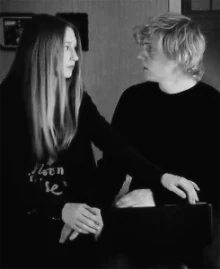

Кайл вместе со своими собратьями по колледжу отправляется на вечеринку. Он просит своих друзей вести себя адекватно и сильно не пьянствовать. Парни с криками выходят из автобуса и идут в здание. Там Кайл вместе с друзьями пьют пунш, как в помещение входит кинозвезда Мэдисон Мартгомери. Арчи сразу же западает на неё, а Кайл смеясь говорит, что она ему не по зубам. Самому же Кайлу с первого взгляда начинает нравиться ее спутница Зои Бенсон и он решает познакомиться с ней.
Зои и Мэдисон направляются в морг, чтобы воскресить Кайла. Девушки сшивают Кайла из лучших частей разных парней, после чего проговаривают заклинания, но оно не срабатывает. Мэдисон не сильно расстраивается, и уходит, говоря что будет ждать Зои в машине. Девушка решает попрощаться с Кайлом, она сильно сожалеет о его гибели и целует Кайла в губы. В этот момент в морг входит полицейский. Зои прячется от него, а тот приходит в ужас, видя сшитого по кускам Кайла. Вдруг он оживает и избивает полицейского до смерти. Когда они уезжают в машине, Зои понимает, что с Кайлом что-то не так, и просит у него прощения, но тот лишь бьётся головой о стекло. Тут из заднего сидения поднимается Мисти Дэй, которая рассказывает о том, что помогла воскресить Кайла. Она предлагает оставить Кайла у себя на болоте, чтобы тот скрасил ее одиночество, и Зои соглашается.
При жизни Кайл серьезно задумывался о будущем и был намного умнее и сдержаннее своих сверстников. После воскрешения он стал совершенно неуравновешенный и не умел толком выражать эмоции. После «починки» Кайл стал лучше осознавать происходящее и понимать свои чувства. Тем не менее, окончательно в норму его привести не удалось, и его приступы агрессии сохранились.Кайл — блондин со светлой кожей и карими глазами. Он был сшит из лучших частей других парней, из-за чего у него есть татуировки, которые они делали, а также шрамы от швов.